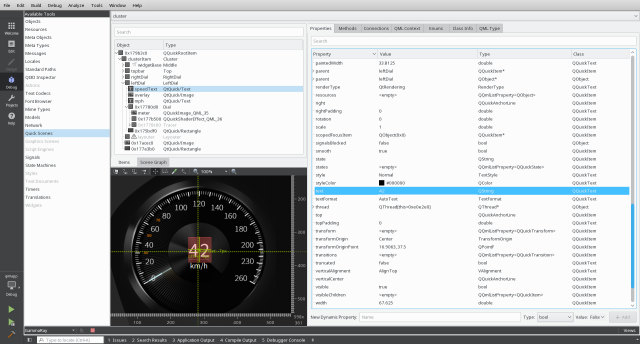
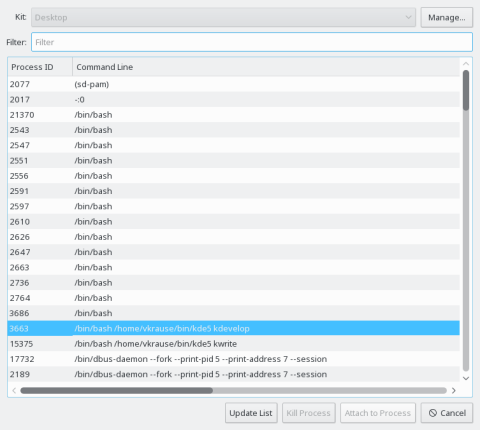
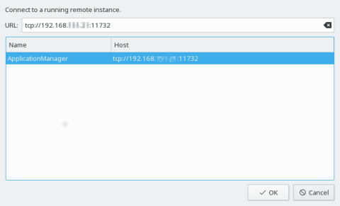

The GammaRay Qt Creator integration plug-in allows you to interact with a target application with GammaRay conveniently from within Qt Creator. The GammaRay Client is embedded inside Qt Creator in this case, and you can directly launch, attach to or connect to target applications using the currently active project configuration. Code navigation from GammaRay will directly open the corresponding source file inside Qt Creator.

The GammaRay Qt Creator integration plug-in is only available in the Qt Automotive Suite.
Launching a target application with GammaRay from within Qt Creator is as easy as starting it in the debugger. Just select Analyze > Start with GammaRay. Your target application will be started and the GammaRay client appears inside Qt Creator. All necessary configuration for GammaRay is automatically determined from the project settings in Qt Creator.
The following remote targets are supported:
To attach to a locally running application select Analyze > Attach GammaRay to a local running process. This will show you the standard process selection dialog of Qt Creator. Select the process you want to attach to and press Attach to Process. After attaching the GammaRay client will be shown inside Qt Creator.

It is also possible to connect to a target on a remote device that has already been injected with GammaRay. This option is available under Analyze > Connect GammaRay to a remote running process. Selecting this option will show the connection dialog depicted in the following screenshot.

GammaRay tries to automatically discover viable targets on your local network, these are displayed in the list view in this dialog, and can be used by selecting the corresponding items. Discovered targets using an incompatible GammaRay version will be shown but will be disabled for selection.
Should GammaRay not be able to discover the desired target automatically, the network address of the target can also be specified manually in the entry field on the top. This might be necessary depending on your local network setup.